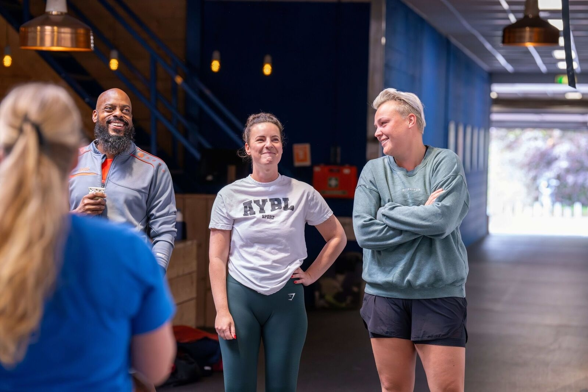

Onze leden
Onze Leden
Mensen die hier al jaren trainen. En vertellen waarom ze blijven.
Bekijk de verhalen
Van beginners tot gevorderden, van jong tot oud. Iedereen heeft zijn eigen reden om te trainen. Dit zijn hun verhalen.
WORD OOK ONDERDEEL VAN CROSSFIT ALKMAAR
Kom vrijblijvend kennismaken en ontdek of CrossFit Alkmaar bij jou past.
Plan je kennismaking